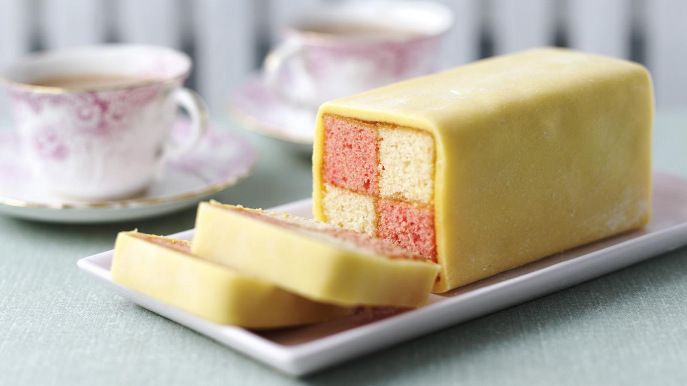

Battenberg Cake

Battenberg Cake Recipe
Ingredients
- 175g/6oz softened butter, plus extra for greasing
- 175g/6oz golden caster sugar
- 3 free-range eggs
- 175g/6oz self-raising flour
- ½ tsp vanilla extract
- red food colouring paste
- 6 tbsp apricot jam
- 500g/1lb 2oz ready-made marzipan
- 2–3 tbsp icing sugar, for rolling.
Steps
Step 1
- Preheat the oven to 190C/375F/Gas 5.
Step 2
- Grease a 20cm/8in square, loose-based cake tin with butter.
Step3
- Take a 30cm x 20cm/12in x 8in strip of baking parchment and make a 8cm/3in fold in the centre. This will create a division in the cake so that the two differently coloured sponges can be cooked at the same time.
Step 4
- Line the tin with the baking parchment, keeping the division in the centre.
Step 5
- Put the butter, sugar, eggs, flour and vanilla in a food processor and pulse until well combined.
Step 6
- Transfer the batter to a bowl set on scales, remove half of the batter and put it in a different bowl.
Step 7
- Add a small dab of red food colouring to one bowl and fold it into the batter until it is well blended.
Step 8
- Spoon the cake batters into each side of the prepared tin and smooth the surface with the back of a spoon.
Step 9
- Bake in the centre of the oven for about 25 minutes, or until the sponges have risen. Cool in the tin for five minutes, then slide a knife around the outside of each sponge and turn them out onto a wire rack. If the sponges have risen unevenly, press the surface gently until level. Leave until completely cold.
Step 10
- To assemble the cake, first place one sponge on top of the other and trim off the crusty edges so they are both the same size. Cut the sponges in half lengthways to make four long rectangles
Step 11
- Warm the apricot jam in a saucepan then press through a fine sieve.
Step 12
- Brush the long side of one of the sponges with jam and sandwich together with a sponge of a contrasting colour. Do the same with the other two sponges.
Step 13
- Sandwich the two pairs of sponges together like a checker board and brush the top and sides with jam.
Step 14
- Place the marzipan on a surface dusted with icing sugar and roll into a rectangle of about 40cm x 20cm/16in x 10in; it should be large enough to wrap the cake completely, leaving the ends exposed, and be about 5mm/¼in thick.
Step 15
- Turn the cake upside down on the marzipan and brush the underside of the sponges with jam.
Step 16
-
Wrap the marzipan around the cake, pressing it gently onto the surface of the sponges, and press the edges together to make a firm join.
Step 17
- Turn back over with the seam underneath, trim a thin slice off each end and place on a serving plate.